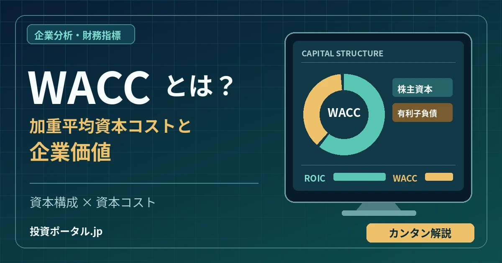

企業分析・財務指標
WACC（加重平均資本コスト）とは？計算方法とROIC・企業価値との関係を初心者向けに解説
企業の決算や中期経営計画に登場するWACC。「利益が出ているのに資本コストを下回る」とはどういう意味でしょうか。株主資本と負債の違いから計算方法、ROICとの比較、DCF法との関係まで、架空の数値例と図解を使って整理します。

目次
- WACC（加重平均資本コスト）とは？
- 資本コストとは？なぜ自己資本にもコストがあるのか？
- WACCの計算方法・計算式
- WACCを実際に計算してみよう
- なぜ負債コストには税効果を反映するのか？
- 株主資本コストはどのように求めるのか？
- 負債コストはどのように求めるのか？
- ROICとWACCの関係・ROICスプレッド
- 黒字でも資本コストを上回れない場合がある
- WACCは高い方がよい？低い方がよい？
- 借入金を増やせばWACCは下がるのか？
- WACCと企業価値・DCF法の関係
- なぜ東京証券取引所は資本コストを意識した経営を求めているのか？
- WACC・ROIC・ROE・ROAの違い
- WACCを企業分析で確認する方法
- 初心者が誤解しやすいポイント
- 投資における注意点
- 初心者向けチェックリスト
- よくある質問（FAQ）
- まとめ
- 関連記事・関連教材
- 参考資料・出典
WACC（加重平均資本コスト）とは？
WACC（Weighted Average Cost of Capital、ワック）とは、企業が事業に必要な資金を確保する際の資本コストを、資金調達手段の構成比率に応じて加重平均した指標です。
企業は株式の発行や内部留保（過去の利益の蓄積）などの株主資本を活用し、銀行借入や社債の発行によっても資金を確保します。銀行や債券投資家は利息などを求め、株主は配当や株価上昇による投資収益を期待しています。
WACCは、企業が事業を通じてどの程度の収益を生み出す必要があるのかを考えるための基準 です。資金提供者全体が事業リスクに応じて要求する収益率を反映した推計値であり、実際に支払う利息の平均値や会計上の費用そのものではありません。
資本コストとは？なぜ自己資本にもコストがあるのか？
借入金には契約に基づく利息や返済義務があります。一方、普通株式には原則として同じような利息や元本返済義務はありません。それでも株主はリスクを負っているため、それに見合う収益を求めます。
例えば、同じ程度のリスクで別の企業への投資から年8％の期待収益率が得られると考える株主は、投資先を選ぶ際にその水準を参考にします。企業が内部留保を事業に使う場合も、株主に還元して別の投資機会に振り向ける選択肢を手放しています。このような 機会費用 も株主資本コストの考え方に含まれます。返済義務がないことと無料であることは別です。
| 比較項目 | 株主資本 | 有利子負債 |
|---|---|---|
| 主な資金提供者 | 株主 | 銀行・債券投資家 |
| 求めるもの | 配当・値上がり益などを含む期待収益 | 利息・元本返済など |
| 元本返済義務 | 原則としてなし | 契約に基づきあり |
| 企業清算時の立場 | 原則として債権者より後順位 | 原則として株主より優先 |
| 資本コストの性質 | 株主が要求する期待収益率 | 現時点の負債調達コスト |
| 税務上の扱い | 配当は原則として損金にならない | 支払利息は一定の条件で損金算入可能 |
普通株式と一般的な有利子負債を前提とした比較です。優先株式・劣後債などには異なる条件があり、税務上も制限があります。
WACCの計算方法・計算式
普通株式と有利子負債で資金を確保する企業を想定すると、基本式は次のようになります。
WACC ＝ E ÷（E＋D）× R e ＋ D ÷（E＋D）× R d ×（1－T）
| 記号 | 意味 |
|---|---|
| E | 株主資本の時価 |
| D | 有利子負債の時価 |
| Re | 株主資本コスト |
| Rd | 税引前負債コスト |
| T | 限界税率など、利用可能な税効果を反映する税率 |
| E＋D | 株主資本と有利子負債の合計 |
資本構成の重みには原則として 時価 を使います。上場企業の普通株式なら時価総額（株価×自己株式を除く発行済株式数など）が参考になります。負債の時価が得にくい場合は、金利や残存期間などを考慮し、合理的な近似として簿価を用いることもあります。将来の目標資本構成を使う方法もあります。
総負債には買掛金なども含まれるため、有利子負債と同じではありません。貸借対照表の自己資本比率をそのまま重みとして使うとも限りません。優先株式などがあれば、その資本コストと構成比率も考慮します。
関連： 自己資本比率・D/Eレシオ・有利子負債の違い 。WACCは算定条件によって変わる推計値です。
WACCを実際に計算してみよう
次の数値はすべて説明用の架空例であり、実在企業のデータではありません。
| 項目 | 数値 |
|---|---|
| 株主資本の時価 | 60億円 |
| 有利子負債の時価 | 40億円 |
| 株主資本コスト | 8％ |
| 税引前負債コスト | 3％ |
| 税率 | 30％ |
- 株主資本の構成比率：60÷100＝60％
- 有利子負債の構成比率：40÷100＝40％
- 税引後負債コスト：3％×（1－0.30）＝2.1％
- 各コストを重み付け：0.6×8％＋0.4×2.1％
この企業の平均的な事業リスクに見合う資本コストは、設定した条件では年5.64％と推計されます。ただし、売上高営業利益率などの会計上の利益率が5.64％なら十分という意味ではありません。後述するROICなど、利益と資本の対象が整合した指標と比較します。
なぜ負債コストには税効果を反映するのか？
支払利息が損金に算入できれば課税所得が減り、法人税等の負担が小さくなる場合があります。この税効果を織り込むため、基本式では税引前負債コストに（1－T）を掛けます。
| 項目 | 架空の数値例 |
|---|---|
| 支払利息 | 100万円 |
| 税率 | 30％ |
| 税負担の減少額 | 30万円 |
| 税効果を考慮した負担額 | 70万円 |
実際に債権者へ支払う利息が70万円になるわけではありません。利息全額が損金算入でき、税効果を十分利用できると仮定した場合の実質負担です。赤字企業や利息の損金算入制限がある企業では、税効果がすぐに得られない、または小さくなる場合があります。国・地域による税制の違いにも注意が必要です。
株主資本コストはどのように求めるのか？
株主資本コストは借入金利のように契約で決まるものではありません。市場データなどから推計する代表的な方法がCAPM（資本資産価格モデル）です。
株主資本コスト ＝ リスクフリーレート ＋ β × 株式リスクプレミアム
- リスクフリーレート：信用リスクが極めて低い資産などを基準とする収益率。評価通貨などに合う国債利回りを参考にする場合があります。
- β（ベータ）：市場全体の変動に対する個別株の感応度。企業のあらゆるリスクではなく、市場リスクに対する感応度を表します。
- 株式リスクプレミアム：株式市場に投資する際にリスクフリーレートを上回って期待される収益率。
架空例：リスクフリーレート2％、β1.2、株式リスクプレミアム5％なら、 2％＋1.2×5％＝8％ です。
使用する金利の期間、βの推計期間・市場指数、株式リスクプレミアムの見積もり方などによって結果は変わります。配当割引モデルに基づく推計や複数のリスク要因を用いるモデルも存在します。
負債コストはどのように求めるのか？
負債コストは、現時点で同程度のリスクと条件の資金を調達するとしたら、どれほどのコストがかかるかを考えます。次の項目が参考になります。
- 現在の借入金利、社債の市場利回り
- 国債などの基準金利、信用スプレッド、信用格付け
- 財務健全性、借入期間、担保・保証の有無、金融市場の状況
信用スプレッドは、信用リスクなどに応じて基準となる金利に上乗せされる利回り差です。信用力が悪化すると調達コストが高まる場合があります。ただし社債利回りには流動性などの要因も含まれます。
過去の支払利息÷有利子負債（期間平均など）は参考になりますが、過去の契約金利を反映するため、今の市場金利や信用リスクと一致するとは限りません。
ROICとWACCの関係・ROICスプレッド
ROIC（投下資本利益率）は事業に投じた資本がどの程度の利益を生んでいるかを表します。WACCは、その資本に対して資金提供者が求める収益率の推計値です。
| 比較項目 | ROIC | WACC |
|---|---|---|
| 日本語名称 | 投下資本利益率 | 加重平均資本コスト |
| 主な意味 | 事業の資本収益性 | 資金提供者の要求収益率 |
| 主な算出要素 | 税引後営業利益・投下資本 | 株主資本コスト・負債コスト・資本構成 |
| 主な利用目的 | 資本効率の評価 | 投資判断・企業価値評価 |
| 数値の性質 | 実績値または将来予測値 | 市場データなどに基づく推計値 |
ROIC ＝ NOPAT（税引後営業利益）÷ 投下資本 × 100（％）
投下資本の定義や期首・期末平均の扱いなどには複数の方法があります。詳しくは ROIC・ROE・ROAの違い をご覧ください。
ROICスプレッドとは？
ROICスプレッド ＝ ROIC － WACC
| 状態 | 解釈 |
|---|---|
| ROIC ＞ WACC | 資本コストを上回る収益を生み出している |
| ROIC ＝ WACC | 資本コストに見合う収益を生み出している |
| ROIC ＜ WACC | 資本コストに対して収益性が不足している |
| 架空の企業 | ROIC | WACC | ROICスプレッド |
|---|---|---|---|
| A社 | 10％ | 6％ | ＋4％ポイント |
| B社 | 6％ | 6％ | 0％ポイント |
| C社 | 3％ | 6％ | －3％ポイント |
ROICがWACCを持続的に上回れば経済的な付加価値を生み出すと考えられます。ただし、比較する事業・リスク・期間・会計調整をそろえる必要があります。一時点の差だけで企業価値や株価の将来を断定せず、今後の収益性や成長投資も確認しましょう。
黒字でも資本コストを上回れない場合がある
架空の企業が100億円の投下資本で年間4億円のNOPAT（税引後営業利益）を得たとします。ROICは4％、WACCは6％と仮定します。
| 項目 | 数値 |
|---|---|
| 投下資本 | 100億円 |
| NOPAT | 4億円 |
| ROIC | 4％ |
| WACC | 6％ |
| 資本コスト相当額 | 100億円×6％＝6億円 |
| 経済的な付加価値（簡易） | 4億円－6億円＝－2億円 |
経済的な付加価値（簡易）＝（ROIC－WACC）×投下資本
比率を小数に直して計算すると、（0.04－0.06）×100億円＝－2億円です。営業利益が黒字でも、資本提供者の要求収益率を満たしていないことがあります。この金額は会計上の損失や実際の現金流出ではありません。EVA（経済的付加価値）などの実務計算では会計上の調整が加わる場合があります。
研究開発や設備投資が先行して一時的にROICが低くなることもあります。ROICがWACCを下回ったからといって直ちに倒産する、投資対象として不適切である、という意味ではありません。黒字と現金の関係については フリーキャッシュフロー も参考になります。
WACCは高い方がよい？低い方がよい？
一般に、他の条件が同じならWACCが低いほど資本コストの負担は小さく、要求収益率を上回る事業を行いやすくなります。ただし、低さだけで企業の良し悪しは判断できません。
| 上昇する可能性のある要因 | 低下する可能性のある要因 |
|---|---|
| 市場金利の上昇 | 市場金利の低下 |
| 信用格付けの低下・信用スプレッド拡大 | 信用力の改善・信用スプレッド縮小 |
| 株式リスクプレミアムの上昇 | 株式リスクプレミアムの低下 |
| 事業リスクの増大 | 事業リスクの低下 |
| 財務状況の悪化・過度な負債依存 | 財務の安定・適切な資本構成 |
市場金利の上昇はリスクフリーレートや新規負債コストを押し上げる可能性がありますが、他の要素が逆に動けばWACCが上昇するとは限りません。 金利の種類と関係 をあわせて読むと理解しやすくなります。
すべての企業に共通する絶対的な適正値はありません。 業種、国・地域、通貨、事業リスク、財務構成が異なる企業の数値を単純に比較しないようにしましょう。
借入金を増やせばWACCは下がるのか？
一般的な事業会社では債権者が株主より優先されるため、負債コストは株主資本コストより低い場合が多く、税効果もあります。適度な負債利用によりWACCを低下させられる可能性があります。
しかし、過度な借入は支払利息・返済負担を増やし、資金繰りや経営の自由度を悪化させます。財務リスクが高まると信用格付けが下がり、新たな借入金利が上昇する場合があります。株主もより高い収益率を要求する可能性があるため、WACCがかえって上昇することがあります。
実際には借入の条件、事業の現金創出力、返済余力が重要です。 自己資本比率・D/Eレシオ・有利子負債 、 信用格付け も確認しましょう。
WACCと企業価値・DCF法の関係
DCF法（Discounted Cash Flow法）は、企業が将来生み出すと予想されるキャッシュフローを現在価値に割り引いて評価する方法です。将来の現金は受け取るまでの時間や不確実性を考慮する必要があります。
現在価値 ＝ 将来キャッシュフロー ÷（1＋割引率） 経過年数
1年後に110万円のキャッシュフローが得られると仮定した場合：
| 割引率 | 現在価値 |
|---|---|
| 5％ | 約104.76万円 |
| 10％ | 100万円 |
| 15％ | 約95.65万円 |
他の条件が同じで、将来キャッシュフローがプラスの場合、割引率が高いほど現在価値は低くなります。事業に帰属するフリーキャッシュフロー（FCFF）を評価するときは、その事業リスクと整合したWACCを割引率として使います。
キャッシュフローと割引率をそろえる
| 評価対象 | 割引率 |
|---|---|
| FCFF：株主と債権者など資金提供者全体に帰属する事業キャッシュフロー | WACC |
| FCFE：株主に帰属するキャッシュフロー | 株主資本コスト |
会計上の営業CFや簡便的なFCFをそのままFCFFとみなすことはできません。事業価値と株主価値、実際の時価総額も別物です。事業価値から株主価値を考える際には、非事業用資産や負債などを調整する必要があります。
通貨、事業リスク、名目・実質の前提を割引率とキャッシュフローでそろえましょう。例えば名目の円建てキャッシュフローには整合する名目の円建て割引率を使用します。成長率や将来の利益・投資の見通しも評価を変えるため、WACCの変化だけで株価が同じ方向へ動くとは限りません。
関連： フリーキャッシュフロー ・ EBITDA ・ 運転資本 。
なぜ東京証券取引所は資本コストを意識した経営を求めているのか？
東京証券取引所は2023年3月から、プライム市場・スタンダード市場の上場会社に資本コストや株価を意識した経営への対応を求めています。2026年4月28日の要請更新では、経営資源の配分を中心に投資家の期待や取組みのポイントが整理され、10月27日には4年目の現状と今後の取組みが公表されました。公式ページでは11月13日に10月末時点の開示企業一覧が更新されています（2026年11月26日確認）。
企業が自社の資本コスト、資本収益性、市場評価を把握して課題を分析し、成長投資・収益性改善・株主還元などへの経営資源の配分を検討することが重要です。投資家との対話を通じた継続的な見直しも、中長期的な企業価値向上につながります。
この要請はPBR（株価純資産倍率）が1倍未満の企業だけを対象とするものではなく、一律のWACCやROIC目標を義務付けるものでもありません。配当や 自社株買い を増やせば解決するという話ではなく、事業の持続的な価値向上が目的です。
公式資料： JPX 資本コストや株価を意識した経営の実現に向けた対応 （具体的な公表資料は末尾の参考資料参照）。
WACC・ROIC・ROE・ROAの違い
| 指標 | 主な意味 | 主な用途 |
|---|---|---|
| WACC | 加重平均資本コスト | 資本コスト・企業価値評価 |
| 株主資本コスト | 株主が要求する期待収益率 | 株主価値評価 |
| ROIC | 投下資本に対する収益性 | 事業の資本効率 |
| ROE | 自己資本に対する収益性 | 株主資本の効率 |
| ROA | 総資産に対する収益性 | 資産の利用効率 |
原則として、 ROICとWACC、ROEと株主資本コスト を対応させます。ROEは株主に帰属する利益を自己資本と比較するのに対し、WACCは株主・債権者など全体の要求収益率を表すため、ROEとWACCを直接比較することは一般的に適切ではありません。
計算方法や使い分けは ROIC・ROE・ROAの違い で詳しく解説しています。
WACCを企業分析で確認する方法
WACCは財務諸表に必ず記載される確定的な会計数値ではありません。企業がWACCを直接公表しない場合もあります。まず企業公式IRサイトで、以下の資料を探します。
- 統合報告書・中期経営計画・決算説明資料
- 有価証券報告書・コーポレート・ガバナンス報告書
- 資本コストや株価を意識した経営に関する開示資料
「WACC」「資本コスト」「ROICスプレッド」「資本効率」などの語句を資料内で検索すると見つけやすくなります。開示がある場合、以下の条件を確認しましょう。
| 確認項目 | 見るポイント |
|---|---|
| 算定時点・方法 | いつ、どの手法で推計したか |
| 株主資本コスト・負債コスト | 金利・β・リスクプレミアム・信用リスクなどの前提 |
| 資本構成・税率 | 時価か簿価か、目標構成か、利用可能な税効果か |
| ROICとの関係 | 期間や対象事業、計算定義がそろっているか |
| 目標値か推計値か | 経営目標と現時点の推計を区別 |
| 全社か事業別か | リスクの異なる事業が混在していないか |
| 過去の推移 | 前提条件の変更や市場環境の変化を確認 |
会社側が示すWACCも算定時点と仮定に基づく推計です。公表していない場合は必要なデータや仮定が得られる範囲で推計し、無理に確定値を求めないことが大切です。
初心者が誤解しやすいポイント
| 誤解 | 正しい理解 |
|---|---|
| WACCは企業の借入金利 | 株主資本コストと税引後負債コストの加重平均 |
| 自己資本にはコストがない | 株主の要求収益率や機会費用が存在する |
| 配当利回りが株主資本コスト | 値上がり益などを含めた期待収益を考える |
| 財務諸表からそのまま確認できる | 市場データなどに基づく推計が必要 |
| 資本構成比率は必ず簿価で計算 | 原則は時価 |
| WACCは低ければ低いほどよい | 事業リスクや収益性との関係も重要 |
| 借金を増やせばWACCを下げられる | 財務リスク増大により逆に高まる場合もある |
| ROICがWACCを上回れば必ず株価が上がる | 将来業績や市場予想、株価水準にも左右される |
| 黒字企業は必ず企業価値を高めている | 資本コストに見合う収益かも重要 |
| 全企業に共通する適正値がある | 業種・市場環境・事業リスクなどで異なる |
投資における注意点
- WACCは唯一の正解がある数値ではなく、金利・株価・市場環境や株主資本コストの推計手法によって変わります。
- 異なる業種・事業リスクの企業を単純比較しないようにしましょう。全社WACCが全事業やすべての投資案件に適切とは限りません。
- 成長企業や赤字企業は現在の収益性だけで評価できず、過去のROICが将来も維持される保証もありません。
- 企業価値評価は将来予測や前提の変化に敏感です。複数の条件で結果がどう変わるかも確認します。
- 銀行などの金融機関では負債が事業そのものに深く関わるため、一般事業会社と同じROIC・WACCやFCFFによる評価が適切とは限りません。
- ROICとWACCの差だけで投資を判断せず、財務健全性、将来の収益、株価に織り込まれた期待なども考慮しましょう。
初心者向けチェックリスト
- □ WACCの算定前提を確認したか
- □ 株主資本コストと負債コストを区別したか
- □ 時価と簿価の違いを理解したか
- □ 税効果が考慮されているか
- □ WACCとROICを整合した条件で比較したか
- □ ROICスプレッドの過去の推移を確認したか
- □ 成長投資や将来の収益性を考慮したか
- □ 金利や信用格付けの変化を確認したか
- □ 財務健全性を確認したか
- □ 同業他社との比較条件が整合しているか
- □ 一つの財務指標だけで投資判断をしていないか
よくある質問（FAQ）
WACCとは何ですか？
株主資本コストと税引後負債コストを資本構成に応じて加重平均した、資金提供者全体の要求収益率の推計値です。
WACCは何と読みますか？
一般に「ワック」と読みます。
WACCはどのように計算しますか？
株主資本比率×株主資本コスト＋有利子負債比率×税引前負債コスト×（1－税率）です。構成比率は原則時価ベースです。
WACCが5％とはどういう意味ですか？
一定の仮定に基づき、事業の資本コストが年5％と推計されるという意味です。実際に利息を5％支払うという意味ではありません。
WACCは何％であれば適正ですか？
全企業に共通の適正値はありません。通貨、事業リスク、資本構成、金利などによって変わります。
WACCは低い方がよいですか？
他の条件が同じなら資本コストの負担は小さくなりますが、収益性やリスクも併せて確認します。
なぜ株主資本にもコストがあるのですか？
株主は投資リスクに見合う収益を求め、他の投資先を選ぶ機会もあるためです。
なぜ負債コストは税引後で計算するのですか？
支払利息が損金算入できる場合、税負担が軽くなるためです。利用可能な税効果を前提に計算します。
WACCとROICは何が違うのですか？
WACCは要求収益率の推計、ROICは事業に投下した資本に対する利益率です。
ROICがWACCを下回るとどうなりますか？
資本コストを満たす収益性が不足する状態です。ただし一時的な成長投資もあり、直ちに倒産するという意味ではありません。
金利が上昇するとWACCも上昇しますか？
上昇する可能性はありますが、信用スプレッドや株式リスクプレミアム、資本構成も影響するため必ずではありません。
借入金を増やすとWACCは下がりますか？
一定の条件で下がることはありますが、過度な借入により財務リスクが上昇すれば逆に高まることもあります。
WACCはどこで確認できますか？
統合報告書、中期経営計画、決算説明資料などに掲載される場合があります。公表していない企業もあります。
なぜDCF法ではWACCを使用するのですか？
FCFFを評価する場合、事業のリスクと整合する資金提供者全体の要求収益率で割り引くためです。FCFEには株主資本コストを使います。
まとめ
- WACCは株主資本コストと税引後負債コストを構成比率で加重平均した推計値です。
- 自己資本にも株主が求める期待収益率や機会費用があります。
- ROICとWACCの差は資本効率と経済的な価値創出を考える基準です。
- WACCはFCFFを対象とするDCF法の割引率に使われます。
- 金利・信用リスク・資本構成によって変動し、前提条件や他の財務指標との整合性が重要です。
WACCを単独で見るのではなく、ROIC、フリーキャッシュフロー、財務健全性と組み合わせることで、企業がどのように資本を活用し、価値を高めようとしているのかを理解しやすくなります。
参考資料・出典
- 日本取引所グループ：資本コストや株価を意識した経営の実現に向けた対応 ：対象市場・開示一覧・関連資料
- 東京証券取引所：投資者の視点を踏まえたポイントと事例（2024年2月1日） ：投資家の視点
- 東京証券取引所：要請のアップデート（2026年4月28日） ：経営資源の配分
- 東京証券取引所：4年目の現状と今後の取組み（2026年10月27日） ：取組みの進捗
- NYU Stern / Aswath Damodaran：Financial Ratios and Measures ：WACC・CAPM・時価・負債コストの定義
- NYU Stern / Aswath Damodaran：Capital Structure ：資本構成・税効果・負債とリスク
- NYU Stern / Aswath Damodaran：Discounted Cashflow Valuation ：DCF・FCFF・FCFEと割引率
確認日：2026年11月26日。本文の計算例・図解はすべて説明用の架空例または概念図であり、実在企業・業種平均の数値ではありません。
一般ユーザー目線の体験でおすすめの会社をご紹介

ご利用にあたっての注意事項
本記事は金融教育・情報提供を目的とし、特定の有価証券の購入や投資を勧誘するものではありません。株式投資には価格変動等による損失の可能性があります。制度・税務上の取扱いは状況によって異なります。最新の開示資料等を確認し、ご自身の判断と責任でお取引ください。